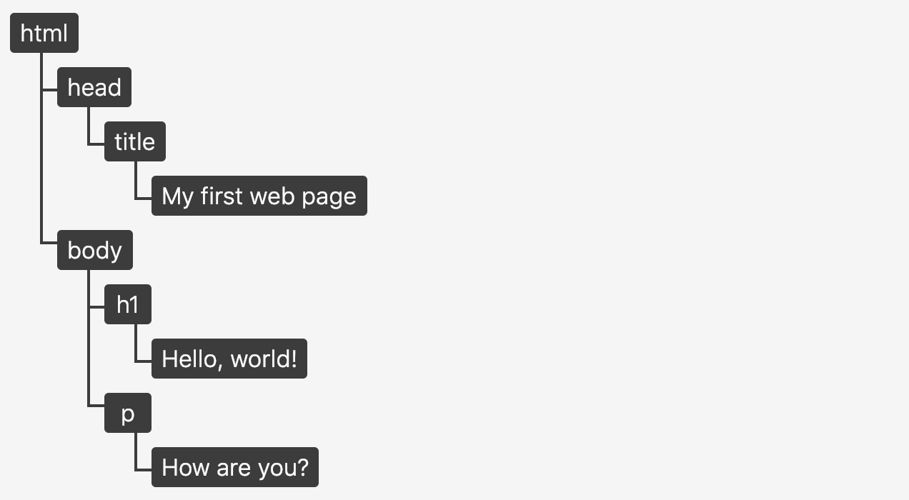
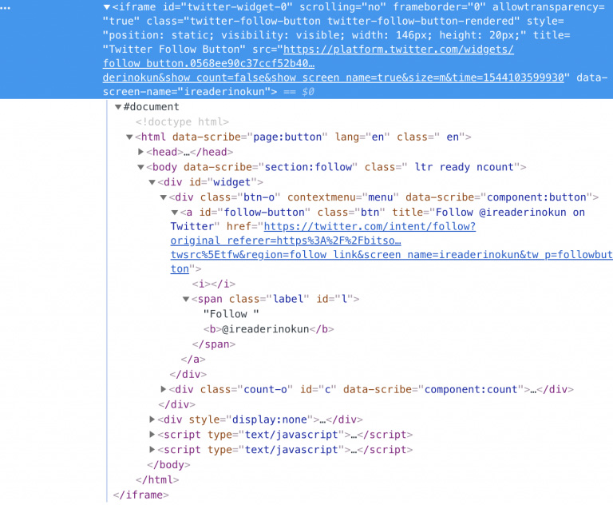
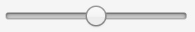
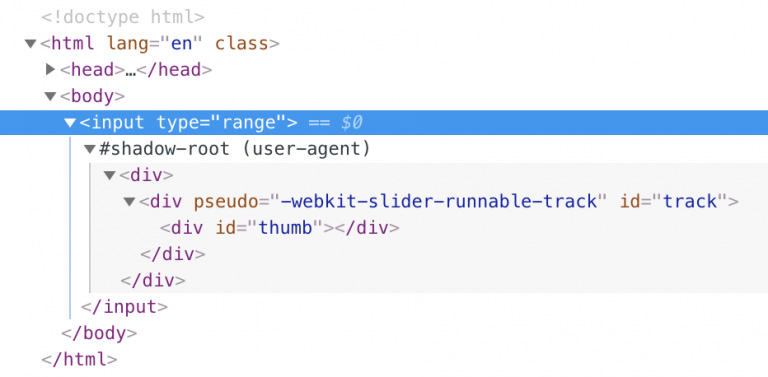
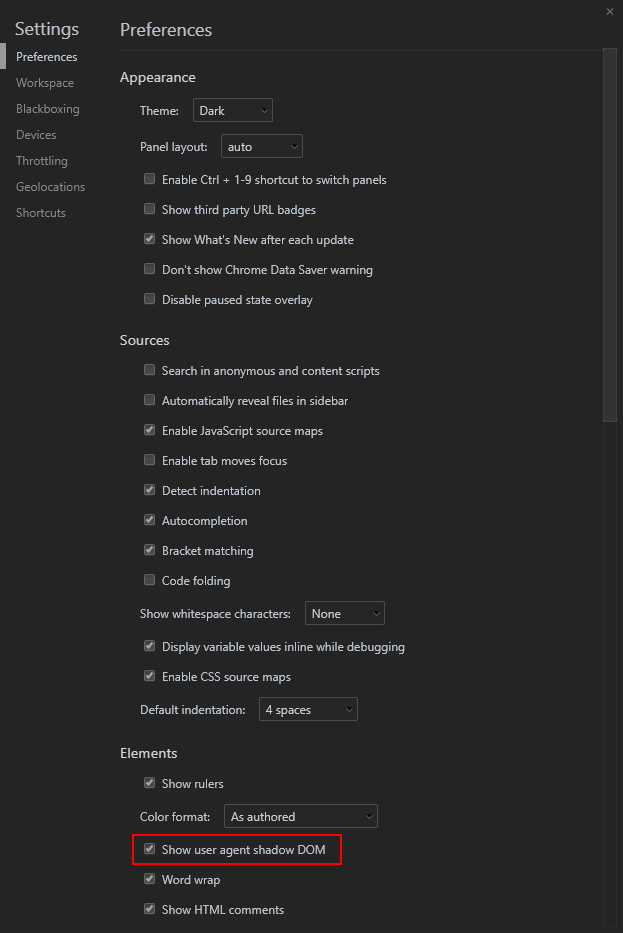
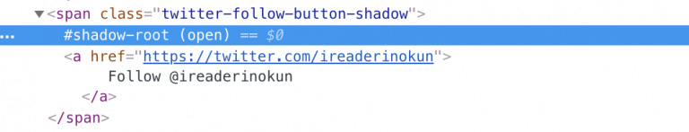
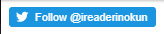
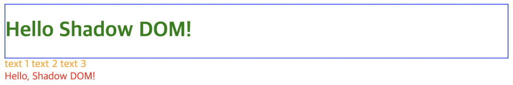

<!DOCTYPE html>
<html>
<head><meta name="generator" content="Hexo 3.8.0">
    <meta charset="utf-8">
    
    <title>Shadow DOM | J Dev</title>
    <meta name="viewport" content="width=device-width, initial-scale=1, maximum-scale=1">
    
        <meta name="keywords" content="html,html5">
    
    <meta name="description" content="Shadow DOM은 무엇일까?DOM(Document Object Model)은 HTML 문서의 구조화된 표현입니다. 이것은 브라우저가 페이지에 무엇을 렌더링 할지 결정하기 위해, 혹은 자바스크립트 프로그램이 페이지의 콘텐츠 및 구조, 스타일을 수정하기 위해 사용됩니다. 12345678910&amp;lt;!DOCTYPE html&amp;gt;&amp;lt;html lang=&quot;e">
<meta name="keywords" content="html,html5">
<meta property="og:type" content="article">
<meta property="og:title" content="Shadow DOM">
<meta property="og:url" content="http://woonyzzang.github.com/2019/08/15/html5-shadow-dom/index.html">
<meta property="og:site_name" content="J Dev">
<meta property="og:description" content="Shadow DOM은 무엇일까?DOM(Document Object Model)은 HTML 문서의 구조화된 표현입니다. 이것은 브라우저가 페이지에 무엇을 렌더링 할지 결정하기 위해, 혹은 자바스크립트 프로그램이 페이지의 콘텐츠 및 구조, 스타일을 수정하기 위해 사용됩니다. 12345678910&amp;lt;!DOCTYPE html&amp;gt;&amp;lt;html lang=&quot;e">
<meta property="og:locale" content="en">
<meta property="og:image" content="http://woonyzzang.github.com/2019/08/15/html5-shadow-dom/html5-shadow-dom_1.jpg">
<meta property="og:updated_time" content="2019-08-15T03:39:00.708Z">
<meta name="twitter:card" content="summary">
<meta name="twitter:title" content="Shadow DOM">
<meta name="twitter:description" content="Shadow DOM은 무엇일까?DOM(Document Object Model)은 HTML 문서의 구조화된 표현입니다. 이것은 브라우저가 페이지에 무엇을 렌더링 할지 결정하기 위해, 혹은 자바스크립트 프로그램이 페이지의 콘텐츠 및 구조, 스타일을 수정하기 위해 사용됩니다. 12345678910&amp;lt;!DOCTYPE html&amp;gt;&amp;lt;html lang=&quot;e">
<meta name="twitter:image" content="http://woonyzzang.github.com/2019/08/15/html5-shadow-dom/html5-shadow-dom_1.jpg">
    
    <link rel="canonical" href="http://woonyzzang.github.com/2019/08/15/html5-shadow-dom/">

    

    
        <link rel="icon" href="/images/favicon.png">
    

    <link rel="stylesheet" href="/libs/font-awesome/css/font-awesome.min.css">
    <link rel="stylesheet" href="/libs/titillium-web/styles.css">
    <link rel="stylesheet" href="/libs/source-code-pro/styles.css">

    <link rel="stylesheet" href="/css/style.css">

    <script src="/libs/jquery/2.0.3/jquery.min.js"></script>
    
    
        <link rel="stylesheet" href="/libs/lightgallery/css/lightgallery.min.css">
    
    
    

</head>
</html>
<body>
    <div id="wrap">
        <header id="header">
    <div id="header-outer" class="outer">
        <div class="container">
            <div class="container-inner">
                <div id="header-title">
                    <h1 class="logo-wrap">
                        <a href="/" class="logo"></a>
                    </h1>
                    
                        <h2 class="subtitle-wrap">
                            <p class="subtitle">Web Development Story Blog</p>
                        </h2>
                    
                </div>
                <div id="header-inner" class="nav-container">
                    <a id="main-nav-toggle" class="nav-icon fa fa-bars"></a>
                    <div class="nav-container-inner">
                        <ul id="main-nav">
                            
                                <li class="main-nav-list-item">
                                    <a class="main-nav-list-link" href="/">Home</a>
                                </li>
                            
                                        <ul class="main-nav-list"><li class="main-nav-list-item"><a class="main-nav-list-link" href="/categories/App/">App</a><ul class="main-nav-list-child"><li class="main-nav-list-item"><a class="main-nav-list-link" href="/categories/App/Ionic/">Ionic</a></li></ul></li><li class="main-nav-list-item"><a class="main-nav-list-link" href="/categories/Editor/">Editor</a><ul class="main-nav-list-child"><li class="main-nav-list-item"><a class="main-nav-list-link" href="/categories/Editor/SublimeText/">SublimeText</a></li><li class="main-nav-list-item"><a class="main-nav-list-link" href="/categories/Editor/VSCode/">VSCode</a></li><li class="main-nav-list-item"><a class="main-nav-list-link" href="/categories/Editor/Visualstudio/">Visualstudio</a></li><li class="main-nav-list-item"><a class="main-nav-list-link" href="/categories/Editor/Webstorm/">Webstorm</a></li></ul></li><li class="main-nav-list-item"><a class="main-nav-list-link" href="/categories/Etc/">Etc</a><ul class="main-nav-list-child"><li class="main-nav-list-item"><a class="main-nav-list-link" href="/categories/Etc/Log/">Log</a></li></ul></li><li class="main-nav-list-item"><a class="main-nav-list-link" href="/categories/FrontEnd/">FrontEnd</a><ul class="main-nav-list-child"><li class="main-nav-list-item"><a class="main-nav-list-link" href="/categories/FrontEnd/Angular-js/">Angular.js</a></li><li class="main-nav-list-item"><a class="main-nav-list-link" href="/categories/FrontEnd/Backbone-js/">Backbone.js</a></li><li class="main-nav-list-item"><a class="main-nav-list-link" href="/categories/FrontEnd/D3-js/">D3.js</a></li><li class="main-nav-list-item"><a class="main-nav-list-link" href="/categories/FrontEnd/Javascript-js/">Javascript.js</a></li><li class="main-nav-list-item"><a class="main-nav-list-link" href="/categories/FrontEnd/Node-js/">Node.js</a></li><li class="main-nav-list-item"><a class="main-nav-list-link" href="/categories/FrontEnd/React-js/">React.js</a></li><li class="main-nav-list-item"><a class="main-nav-list-link" href="/categories/FrontEnd/Require-js/">Require.js</a></li><li class="main-nav-list-item"><a class="main-nav-list-link" href="/categories/FrontEnd/Webpack/">Webpack</a></li><li class="main-nav-list-item"><a class="main-nav-list-link" href="/categories/FrontEnd/jQuery/">jQuery</a></li></ul></li><li class="main-nav-list-item"><a class="main-nav-list-link" href="/categories/OS/">OS</a><ul class="main-nav-list-child"><li class="main-nav-list-item"><a class="main-nav-list-link" href="/categories/OS/CentOS/">CentOS</a></li><li class="main-nav-list-item"><a class="main-nav-list-link" href="/categories/OS/Mac/">Mac</a></li><li class="main-nav-list-item"><a class="main-nav-list-link" href="/categories/OS/Ubuntu/">Ubuntu</a></li><li class="main-nav-list-item"><a class="main-nav-list-link" href="/categories/OS/Windows/">Windows</a></li></ul></li><li class="main-nav-list-item"><a class="main-nav-list-link" href="/categories/Server/">Server</a><ul class="main-nav-list-child"><li class="main-nav-list-item"><a class="main-nav-list-link" href="/categories/Server/ASP/">ASP</a></li><li class="main-nav-list-item"><a class="main-nav-list-link" href="/categories/Server/AWS/">AWS</a></li><li class="main-nav-list-item"><a class="main-nav-list-link" href="/categories/Server/Docker/">Docker</a></li><li class="main-nav-list-item"><a class="main-nav-list-link" href="/categories/Server/Gitlab/">Gitlab</a></li><li class="main-nav-list-item"><a class="main-nav-list-link" href="/categories/Server/PHP/">PHP</a></li></ul></li><li class="main-nav-list-item"><a class="main-nav-list-link" href="/categories/Tools/">Tools</a><ul class="main-nav-list-child"><li class="main-nav-list-item"><a class="main-nav-list-link" href="/categories/Tools/APMSETUP/">APMSETUP</a></li><li class="main-nav-list-item"><a class="main-nav-list-link" href="/categories/Tools/Fiddler/">Fiddler</a></li><li class="main-nav-list-item"><a class="main-nav-list-link" href="/categories/Tools/OpenSSl/">OpenSSl</a></li><li class="main-nav-list-item"><a class="main-nav-list-link" href="/categories/Tools/VMware/">VMware</a></li></ul></li><li class="main-nav-list-item"><a class="main-nav-list-link" href="/categories/Web/">Web</a><ul class="main-nav-list-child"><li class="main-nav-list-item"><a class="main-nav-list-link" href="/categories/Web/CSS/">CSS</a></li><li class="main-nav-list-item"><a class="main-nav-list-link" href="/categories/Web/Descktop/">Descktop</a></li><li class="main-nav-list-item"><a class="main-nav-list-link" href="/categories/Web/HTML/">HTML</a></li><li class="main-nav-list-item"><a class="main-nav-list-link" href="/categories/Web/Mobile/">Mobile</a></li><li class="main-nav-list-item"><a class="main-nav-list-link" href="/categories/Web/Others/">Others</a></li></ul></li></ul>
                                    
                        </ul>
                        <nav id="sub-nav">
                            <div id="search-form-wrap">

    <form class="search-form">
        <input type="text" class="ins-search-input search-form-input" placeholder="Search">
        <button type="submit" class="search-form-submit"></button>
    </form>
    <div class="ins-search">
    <div class="ins-search-mask"></div>
    <div class="ins-search-container">
        <div class="ins-input-wrapper">
            <input type="text" class="ins-search-input" placeholder="Type something...">
            <span class="ins-close ins-selectable"><i class="fa fa-times-circle"></i></span>
        </div>
        <div class="ins-section-wrapper">
            <div class="ins-section-container"></div>
        </div>
    </div>
</div>
<script>
(function (window) {
    var INSIGHT_CONFIG = {
        TRANSLATION: {
            POSTS: 'Posts',
            PAGES: 'Pages',
            CATEGORIES: 'Categories',
            TAGS: 'Tags',
            UNTITLED: '(Untitled)',
        },
        ROOT_URL: '/',
        CONTENT_URL: '/content.json',
    };
    window.INSIGHT_CONFIG = INSIGHT_CONFIG;
})(window);
</script>
<script src="/js/insight.js"></script>

</div>
                        </nav>
                    </div>
                </div>
            </div>
        </div>
    </div>
</header>
        <div class="container">
            <div class="main-body container-inner">
                <div class="main-body-inner">
                    <section id="main">
                        <div class="main-body-header">
    <h1 class="header">
    
    <a class="page-title-link" href="/categories/Web/">Web</a><i class="icon fa fa-angle-right"></i><a class="page-title-link" href="/categories/Web/HTML/">HTML</a>
    </h1>
</div>
                        <div class="main-body-content">
                            <article id="post-html5-shadow-dom" class="article article-single article-type-post" itemscope="" itemprop="blogPost">
    <div class="article-inner">
        
            <header class="article-header">
                
    
        <h1 class="article-title" itemprop="name">
        Shadow DOM
        </h1>
    

            </header>
        
        
            <div class="article-subtitle">
                <a href="/2019/08/15/html5-shadow-dom/" class="article-date">
    <time datetime="2019-08-15T03:33:20.000Z" itemprop="datePublished">2019-08-15</time>
</a>
                
    <ul class="article-tag-list"><li class="article-tag-list-item"><a class="article-tag-list-link" href="/tags/html/">html</a></li><li class="article-tag-list-item"><a class="article-tag-list-link" href="/tags/html5/">html5</a></li></ul>

            </div>
        
        
        <div class="article-entry" itemprop="articleBody">
            <h3 id="Shadow-DOM은-무엇일까"><a href="#Shadow-DOM은-무엇일까" class="headerlink" title="Shadow DOM은 무엇일까?"></a>Shadow DOM은 무엇일까?</h3><p>DOM(Document Object Model)은 HTML 문서의 구조화된 표현입니다. 이것은 브라우저가 페이지에 무엇을 렌더링 할지 결정하기 위해, 혹은 자바스크립트 프로그램이 페이지의 콘텐츠 및 구조, 스타일을 수정하기 위해 사용됩니다.</p>
<figure class="highlight html"><table><tr><td class="gutter"><pre><span class="line">1</span><br><span class="line">2</span><br><span class="line">3</span><br><span class="line">4</span><br><span class="line">5</span><br><span class="line">6</span><br><span class="line">7</span><br><span class="line">8</span><br><span class="line">9</span><br><span class="line">10</span><br></pre></td><td class="code"><pre><span class="line"><span class="meta">&lt;!DOCTYPE html&gt;</span></span><br><span class="line"><span class="tag">&lt;<span class="name">html</span> <span class="attr">lang</span>=<span class="string">"en"</span>&gt;</span></span><br><span class="line"><span class="tag">&lt;<span class="name">head</span>&gt;</span></span><br><span class="line">    <span class="tag">&lt;<span class="name">title</span>&gt;</span>My first web page<span class="tag">&lt;/<span class="name">title</span>&gt;</span></span><br><span class="line"><span class="tag">&lt;/<span class="name">head</span>&gt;</span></span><br><span class="line"><span class="tag">&lt;<span class="name">body</span>&gt;</span></span><br><span class="line">    <span class="tag">&lt;<span class="name">h1</span>&gt;</span>Hello, world!<span class="tag">&lt;/<span class="name">h1</span>&gt;</span></span><br><span class="line">    <span class="tag">&lt;<span class="name">p</span>&gt;</span>How are you?<span class="tag">&lt;/<span class="name">p</span>&gt;</span></span><br><span class="line"><span class="tag">&lt;/<span class="name">body</span>&gt;</span></span><br><span class="line"><span class="tag">&lt;/<span class="name">html</span>&gt;</span></span><br></pre></td></tr></table></figure>
<p>위의 HTML 문서는 다음과 같은 DOM 트리를 생성합니다.</p>
<p></p>
<p>지난 몇 년 동안 <code>Shadow DOM</code>과 <code>Virtual DOM</code>이라는 용어를 들어보셨을 겁니다. 이들은 DOM과 관련이 있지만 매우 다른 개념을 가리킵니다.<br>이 문서에서는 shadow DOM이 무엇인지, 그리고 기존의 DOM과 어떻게 다른지에 대해 다루도록 하겠습니다.</p>
<p>HTML 문서의 모든 요소와 스타일로 이루어진 DOM은 하나의 큰 <strong>글로벌</strong> 범위 내에 있습니다.<br>페이지의 요소가 문서 내에 깊이 중첩되어 있거나 어디에 배치되어있는지 상관없이 <code>document.querySelector()</code> 메서드를 사용하여 접근이 가능합니다. 마찬가지로, CSS 스타일 또한 글로벌 범위 내의 어떤 요소든 선택이 가능합니다.</p>
<p>문서 전체에 스타일을 일괄 적용하고 싶을 때 이러한 방식은 매우 유용합니다. 예를 들어, box-sizing 속성을 사용한 한 줄의 코드를 통해 페이지에 있는 모든 단일 요소를 선택할 수 있습니다.</p>
<figure class="highlight css"><table><tr><td class="gutter"><pre><span class="line">1</span><br></pre></td><td class="code"><pre><span class="line">* &#123; <span class="attribute">box-sizing</span>: border-box &#125;</span><br></pre></td></tr></table></figure>
<p>반면에 어떤 요소는 완전한 <strong>캡슐화</strong>를 필요로 하는 경우가 있고, 이것이 글로벌 스타일에 영향을 받는 것을 원하지 않을 수 있습니다.<br>이에 대한 좋은 예는 트위터의 “follow” 버튼과 같이 외부에서 가져온 위젯을 들 수 있습니다.</p>
<figure class="highlight html"><table><tr><td class="gutter"><pre><span class="line">1</span><br></pre></td><td class="code"><pre><span class="line"><span class="tag">&lt;<span class="name">iframe</span> <span class="attr">scrolling</span>=<span class="string">"no"</span> <span class="attr">frameborder</span>=<span class="string">"0"</span> <span class="attr">allowtransparency</span>=<span class="string">"true"</span> <span class="attr">src</span>=<span class="string">"https://platform.twitter.com/widgets/follow_button.d30011b0f5ce05b98f24b01d3331b3c1.en.html#dnt=false&amp;amp;id=twitter-widget-0&amp;amp;lang=en&amp;amp;screen_name=ireaderinokun&amp;amp;show_count=false&amp;amp;show_screen_name=true&amp;amp;size=m&amp;amp;time=1546395468133"</span>&gt;</span><span class="tag">&lt;/<span class="name">iframe</span>&gt;</span></span><br></pre></td></tr></table></figure>
<p>Javascript를 활성화하고 요소를 검사한다고 가정할 때 이 버튼이 <code>&lt;iframe&gt;</code> 요소라는 것을 알 수 있는데, 이 요소는 실제로 보이는 스타일 버튼과 함께 작은 문서를 로드합니다.</p>
<p></p>
<p><code>&lt;iframe&gt;</code> 은 트위터의 위젯이 호스팅 문서의 전역 CSS에 영향을 받지 않고 의도된 스타일을 보장할 수 있는 방법입니다. 같은 결과를 얻기 위해 캐스케이드를 이용할 수 있지만, 다른 방법으로는 <code>&lt;iframe&gt;</code> 과 같은 보장이 주어지지 않으며 이상적인 방법은 아닙니다.</p>
<p>Shadow DOM은 <code>&lt;iframe&gt;</code>과 같은 도구에 의존할 필요 없이, 웹 플랫폼에서 기본적으로 캡슐화와 구성요소화를 허용하기 위해 만들어졌습니다.</p>
<h3 id="A-DOM-within-a-DOM"><a href="#A-DOM-within-a-DOM" class="headerlink" title="A DOM within a DOM"></a>A DOM within a DOM</h3><p>Shadow DOM을 “DOM 내의 DOM”으로 생각할 수도 있지만, 원래의 DOM 트리에서 완전히 분리된 고유의 요소와 스타일을 가진 DOM 트리입니다.</p>
<p>Shadow DOM은 웹 작성자가 사용하도록 최근에 지정되었지만, 사용자 에이전트에서 폼 요소와 같이 복잡한 구성요소를 만들고 스타일을 입히기 위해 수년 동안 사용되어 왔습니다.<br>예를 들어 범위 입력 요소를 살펴보겠습니다. 페이지에 해당 요소를 생성하기 위해서는 아래의 코드를 추가해야 합니다.</p>
<figure class="highlight html"><table><tr><td class="gutter"><pre><span class="line">1</span><br></pre></td><td class="code"><pre><span class="line"><span class="tag">&lt;<span class="name">input</span> <span class="attr">type</span>=<span class="string">"range"</span>&gt;</span></span><br></pre></td></tr></table></figure>
<p>이 요소로 인해 다음과 같은 구성 요소가 생성됩니다.</p>
<p></p>
<p>더 깊게 파고들면, <code>&lt;input&gt;</code> 요소가 실제로 여러 작은 <code>&lt;div&gt;</code> 요소로 구성되어 트랙과 슬라이더를 자체적으로 제어하는 것을 볼 수 있습니다.</p>
<p></p>
<p>웹브라우저의 네이티브 Shadow DOM 구조는 Chrome 브라우저 개발자 도구 &gt; Settings &gt; Preferences &gt; Elements &gt; Show user agent shadow DOM 체크박스 옵션을 활성화 해야 확인할 수 있습니다.</p>
<p></p>
<h3 id="How-the-shadow-DOM-works"><a href="#How-the-shadow-DOM-works" class="headerlink" title="How the shadow DOM works"></a>How the shadow DOM works</h3><p>Shadow DOM이 어떻게 작동하는지 설명하기 위해 <code>&lt;iframe&gt;</code> 대신 shadow DOM을 사용하여 트위터의 “follow” 버튼을 만들어 보겠습니다.</p>
<p>먼저 <strong>shadow host</strong>로 시작합니다.</p>
<p>shadow host는 새로운 shadow DOM을 붙일 원본 DOM의 일반 HTML 요소를 사용합니다. Follow 버튼과 같은 구성요소의 경우, 페이지에 Javascript가 활성화되지 않았거나 shadow DOM이 지원되지 않을 경우 표시할 폴백 요소를 포함할 수 있습니다.</p>
<figure class="highlight html"><table><tr><td class="gutter"><pre><span class="line">1</span><br><span class="line">2</span><br><span class="line">3</span><br><span class="line">4</span><br><span class="line">5</span><br></pre></td><td class="code"><pre><span class="line"><span class="tag">&lt;<span class="name">span</span> <span class="attr">class</span>=<span class="string">"shadow-host"</span>&gt;</span></span><br><span class="line">    <span class="tag">&lt;<span class="name">a</span> <span class="attr">href</span>=<span class="string">"https://twitter.com/ireaderinokun"</span>&gt;</span></span><br><span class="line">        Follow @ireaderinokun</span><br><span class="line">    <span class="tag">&lt;/<span class="name">a</span>&gt;</span></span><br><span class="line"><span class="tag">&lt;/<span class="name">span</span>&gt;</span></span><br></pre></td></tr></table></figure>
<p>주로 상호 작용하는 특정 요소들은 shadow host가 될 수 없기 때문에, 단순히 <a> 요소를 shadow host로 사용할 수 없습니다.</a></p>
<p>호스트에 shadow DOM을 붙이기 위해, attachShadow() 메서드를 사용합니다.</p>
<figure class="highlight javascript"><table><tr><td class="gutter"><pre><span class="line">1</span><br><span class="line">2</span><br></pre></td><td class="code"><pre><span class="line"><span class="keyword">const</span> shadowEl = <span class="built_in">document</span>.querySelector(<span class="string">'.shadow-host'</span>);</span><br><span class="line"><span class="keyword">const</span> shadow = shadowEl.attachShadow(&#123;<span class="attr">mode</span>: <span class="string">'open'</span>&#125;);</span><br></pre></td></tr></table></figure>
<p>이 코드는 shadow host의 자식 요소인 빈 shadow root를 생성합니다. <code>&lt;html&gt;</code> 요소가 DOM의 시작인 것처럼 shadow root는 shadow DOM의 시작점 역할을 합니다.</p>
<p></p>
<p>일반 HTML 자식 요소는 검사기에서 확인될지라도 shadow root가 차지하면서 더 이상 페이지에 보이지 않게 됩니다.</p>
<p>다음으로, 새로운 shadow tree를 만들기 위해 콘텐츠를 생성해야 합니다. shadow tree는 DOM tree와 비슷하지만 일반 DOM 대신 shadow DOM을 사용합니다.<br>follow 버튼을 생성하기 위해서는 이미 가지고 있는 폴백 링크와 거의 동일하지만 아이콘이 있는 새로운 <code>&lt;a&gt;</code> 요소가 필요합니다.</p>
<figure class="highlight javascript"><table><tr><td class="gutter"><pre><span class="line">1</span><br><span class="line">2</span><br><span class="line">3</span><br><span class="line">4</span><br><span class="line">5</span><br><span class="line">6</span><br><span class="line">7</span><br></pre></td><td class="code"><pre><span class="line"><span class="keyword">const</span> link = <span class="built_in">document</span>.createElement(<span class="string">'a'</span>);</span><br><span class="line"></span><br><span class="line">link.href = shadowEl.querySelector(<span class="string">'a'</span>).href;</span><br><span class="line">link.innerHTML = <span class="string">`</span></span><br><span class="line"><span class="string">    &lt;span aria-label="Twitter icon"&gt;&lt;/span&gt; </span></span><br><span class="line"><span class="string">    <span class="subst">$&#123;shadowEl.querySelector(<span class="string">'a'</span>).textContent&#125;</span></span></span><br><span class="line"><span class="string">`</span>;</span><br></pre></td></tr></table></figure>
<p>일반적인 방법과 동일하게 appendChild() 메서드를 사용하여 shadow DOM에 새로운 요소를 추가합니다.</p>
<figure class="highlight javascript"><table><tr><td class="gutter"><pre><span class="line">1</span><br></pre></td><td class="code"><pre><span class="line">shadow.appendChild(link);</span><br></pre></td></tr></table></figure>
<p>이 시점에서 해당 요소는 아래와 같습니다.</p>
<p></p>
<p>마지막으로 <code>&lt;style&gt;</code> 요소를 만들고 shadow root에 추가함으로써 몇가지 스타일을 적용할 수 있습니다.</p>
<figure class="highlight javascript"><table><tr><td class="gutter"><pre><span class="line">1</span><br><span class="line">2</span><br><span class="line">3</span><br><span class="line">4</span><br><span class="line">5</span><br><span class="line">6</span><br><span class="line">7</span><br><span class="line">8</span><br><span class="line">9</span><br><span class="line">10</span><br><span class="line">11</span><br><span class="line">12</span><br><span class="line">13</span><br><span class="line">14</span><br><span class="line">15</span><br><span class="line">16</span><br><span class="line">17</span><br><span class="line">18</span><br><span class="line">19</span><br><span class="line">20</span><br><span class="line">21</span><br><span class="line">22</span><br><span class="line">23</span><br><span class="line">24</span><br><span class="line">25</span><br><span class="line">26</span><br><span class="line">27</span><br><span class="line">28</span><br><span class="line">29</span><br><span class="line">30</span><br><span class="line">31</span><br><span class="line">32</span><br><span class="line">33</span><br><span class="line">34</span><br><span class="line">35</span><br><span class="line">36</span><br><span class="line">37</span><br><span class="line">38</span><br></pre></td><td class="code"><pre><span class="line"><span class="keyword">const</span> styles = <span class="built_in">document</span>.createElement(<span class="string">'style'</span>);</span><br><span class="line"></span><br><span class="line">styles.textContent = <span class="string">`</span></span><br><span class="line"><span class="string">    a, span &#123;</span></span><br><span class="line"><span class="string">        vertical-align: top;</span></span><br><span class="line"><span class="string">        display: inline-block;</span></span><br><span class="line"><span class="string">        box-sizing: border-box;</span></span><br><span class="line"><span class="string">    &#125;</span></span><br><span class="line"><span class="string">    </span></span><br><span class="line"><span class="string">    a &#123;</span></span><br><span class="line"><span class="string">        height: 20px;</span></span><br><span class="line"><span class="string">        padding: 1px 8px 1px 6px;</span></span><br><span class="line"><span class="string">        background-color: #1b95e0;</span></span><br><span class="line"><span class="string">        color: #fff;</span></span><br><span class="line"><span class="string">        border-radius: 3px;</span></span><br><span class="line"><span class="string">        font-weight: 500;</span></span><br><span class="line"><span class="string">        font-size: 11px;</span></span><br><span class="line"><span class="string">        font-family:'Helvetica Neue', Arial, sans-serif;</span></span><br><span class="line"><span class="string">        line-height: 18px;</span></span><br><span class="line"><span class="string">        text-decoration: none;   </span></span><br><span class="line"><span class="string">    &#125;</span></span><br><span class="line"><span class="string">    </span></span><br><span class="line"><span class="string">    a:hover &#123;</span></span><br><span class="line"><span class="string">        background-color: #0c7abf;</span></span><br><span class="line"><span class="string">    &#125;</span></span><br><span class="line"><span class="string">    </span></span><br><span class="line"><span class="string">    span &#123;</span></span><br><span class="line"><span class="string">        position: relative;</span></span><br><span class="line"><span class="string">        top: 2px;</span></span><br><span class="line"><span class="string">        width: 14px;</span></span><br><span class="line"><span class="string">        height: 14px;</span></span><br><span class="line"><span class="string">        margin-right: 3px;</span></span><br><span class="line"><span class="string">        background: transparent 0 0 no-repeat;</span></span><br><span class="line"><span class="string">        background-image: url(data:image/svg+xml,%3Csvg%20xmlns%3D%22http%3A%2F%2Fwww.w3.org%2F2000%2Fsvg%22%20viewBox%3D%220%200%2072%2072%22%3E%3Cpath%20fill%3D%22none%22%20d%3D%22M0%200h72v72H0z%22%2F%3E%3Cpath%20class%3D%22icon%22%20fill%3D%22%23fff%22%20d%3D%22M68.812%2015.14c-2.348%201.04-4.87%201.744-7.52%202.06%202.704-1.62%204.78-4.186%205.757-7.243-2.53%201.5-5.33%202.592-8.314%203.176C56.35%2010.59%2052.948%209%2049.182%209c-7.23%200-13.092%205.86-13.092%2013.093%200%201.026.118%202.02.338%202.98C25.543%2024.527%2015.9%2019.318%209.44%2011.396c-1.125%201.936-1.77%204.184-1.77%206.58%200%204.543%202.312%208.552%205.824%2010.9-2.146-.07-4.165-.658-5.93-1.64-.002.056-.002.11-.002.163%200%206.345%204.513%2011.638%2010.504%2012.84-1.1.298-2.256.457-3.45.457-.845%200-1.666-.078-2.464-.23%201.667%205.2%206.5%208.985%2012.23%209.09-4.482%203.51-10.13%205.605-16.26%205.605-1.055%200-2.096-.06-3.122-.184%205.794%203.717%2012.676%205.882%2020.067%205.882%2024.083%200%2037.25-19.95%2037.25-37.25%200-.565-.013-1.133-.038-1.693%202.558-1.847%204.778-4.15%206.532-6.774z%22%2F%3E%3C%2Fsvg%3E);</span></span><br><span class="line"><span class="string">    &#125;</span></span><br><span class="line"><span class="string">`</span>;</span><br><span class="line"> </span><br><span class="line">shadow.appendChild(styles);</span><br></pre></td></tr></table></figure>
<p>이렇게 생성된 요소는 다음과 같습니다.</p>
<p></p>
<hr>
<h3 id="The-DOM-vs-the-shadow-DOM"><a href="#The-DOM-vs-the-shadow-DOM" class="headerlink" title="The DOM vs the shadow DOM"></a>The DOM vs the shadow DOM</h3><p>어떤 면에서 shadow DOM은 DOM의 “lite” 버전입니다.<br>DOM과 같이 HTML 요소의 구조화된 표현이며, 페이지에 무엇을 표시할지 결정하고 요소의 수정을 가능하게 합니다. 하지만 DOM과 다르게 완전한 독립 문서를 기반으로 하지 않습니다.<br>이름에서 알 수 있듯이 shadow DOM은 항상 일반 DOM 내의 요소에 부착됩니다. DOM이 없으면 shadow DOM도 존재하지 않습니다.</p>
<hr>
<h3 id="slot"><a href="#slot" class="headerlink" title="slot"></a>slot</h3><p>슬롯은 사용자가 컴포넌트 내부에 원하는 마크업을 채울 수 있도록 미리 선언해놓은 <strong>자리 표시자</strong>입니다.<br>주로 사용자 커스텀 요소를 생성할 때 유용합니다. 사용자 커스텀 요소에 필요한 최소한의 마크업만 제공하고 작성자가 원하는 대로 그룹화하고 스타일을 적용하여 사용할 수 있습니다.</p>
<p>슬롯을 설명하기 전에 <code>&lt;template&gt;</code>을 사용한 마크업 예시를 먼저 살펴보겠습니다.</p>
<figure class="highlight html"><table><tr><td class="gutter"><pre><span class="line">1</span><br><span class="line">2</span><br><span class="line">3</span><br><span class="line">4</span><br><span class="line">5</span><br><span class="line">6</span><br><span class="line">7</span><br><span class="line">8</span><br><span class="line">9</span><br><span class="line">10</span><br></pre></td><td class="code"><pre><span class="line"><span class="comment">&lt;!-- 렌더링할 템플릿 선언 --&gt;</span></span><br><span class="line"><span class="tag">&lt;<span class="name">template</span> <span class="attr">id</span>=<span class="string">"my-template"</span>&gt;</span></span><br><span class="line">    <span class="tag">&lt;<span class="name">style</span>&gt;</span><span class="undefined"></span></span><br><span class="line"><span class="css">        <span class="selector-tag">p</span> &#123; <span class="attribute">color</span>: green; &#125;</span></span><br><span class="line"><span class="undefined">    </span><span class="tag">&lt;/<span class="name">style</span>&gt;</span></span><br><span class="line">    <span class="tag">&lt;<span class="name">p</span>&gt;</span>Hello, Shadow DOM!<span class="tag">&lt;/<span class="name">p</span>&gt;</span></span><br><span class="line"><span class="tag">&lt;/<span class="name">template</span>&gt;</span></span><br><span class="line"> </span><br><span class="line"><span class="comment">&lt;!-- 사용자 커스텀 요소 사용 --&gt;</span></span><br><span class="line"><span class="tag">&lt;<span class="name">my-template</span>&gt;</span><span class="tag">&lt;/<span class="name">my-template</span>&gt;</span></span><br></pre></td></tr></table></figure>
<figure class="highlight javascript"><table><tr><td class="gutter"><pre><span class="line">1</span><br><span class="line">2</span><br><span class="line">3</span><br><span class="line">4</span><br><span class="line">5</span><br><span class="line">6</span><br><span class="line">7</span><br><span class="line">8</span><br><span class="line">9</span><br><span class="line">10</span><br><span class="line">11</span><br><span class="line">12</span><br><span class="line">13</span><br><span class="line">14</span><br></pre></td><td class="code"><pre><span class="line"><span class="comment">// 사용자 커스텀 요소를 정의하고 준비한 템플릿 코드를 가져와 shadow DOM을 생성합니다.</span></span><br><span class="line"><span class="comment">// shadow DOM으로 인해 템플릿 내의 코드는 캡슐화됩니다.</span></span><br><span class="line"><span class="class"><span class="keyword">class</span> <span class="title">myTemplate</span> <span class="keyword">extends</span> <span class="title">HTMLElement</span> </span>&#123;</span><br><span class="line">    <span class="keyword">constructor</span>() &#123;</span><br><span class="line">      <span class="keyword">super</span>();</span><br><span class="line">      <span class="keyword">let</span> template = <span class="built_in">document</span>.getElementById(<span class="string">'my-template'</span>);</span><br><span class="line">      <span class="keyword">let</span> templateContent = template.content;</span><br><span class="line">   </span><br><span class="line">      <span class="keyword">const</span> shadowRoot = <span class="keyword">this</span>.attachShadow(&#123;<span class="attr">mode</span>: <span class="string">'open'</span>&#125;)</span><br><span class="line">            .appendChild(templateContent.cloneNode(<span class="literal">true</span>));</span><br><span class="line">    &#125;</span><br><span class="line">&#125;</span><br><span class="line"></span><br><span class="line">customElements.define(<span class="string">'my-template'</span>, myTemplate);</span><br></pre></td></tr></table></figure>
<p>템플릿 요소는 마크업 조각 형태로 이루어집니다. 이는 페이지 로딩 시 렌더링 되지 않으며 자바스크립트를 이용해 런타임 시 인스턴스화할 수 있습니다.<br>따라서 자주 사용되는 마크업 조각들을 템플릿 요소에 추가하고 복제함으로써 재사용성을 증가시킵니다. 또한 템플릿 요소가 shadow host로 지정되어 내부 스타일을 가질 수 있습니다.</p>
<p>하지만 템플릿은 단순히 작성된 요소만 화면에 표시하기 때문에 유연하지 않습니다. 슬롯은 이러한 템플릿 코드에 <strong>유연성</strong>을 제공합니다.<br>슬롯을 사용한 템플릿 코드 예시를 살펴보겠습니다.</p>
<figure class="highlight html"><table><tr><td class="gutter"><pre><span class="line">1</span><br><span class="line">2</span><br><span class="line">3</span><br><span class="line">4</span><br><span class="line">5</span><br><span class="line">6</span><br><span class="line">7</span><br><span class="line">8</span><br><span class="line">9</span><br><span class="line">10</span><br><span class="line">11</span><br><span class="line">12</span><br><span class="line">13</span><br><span class="line">14</span><br><span class="line">15</span><br></pre></td><td class="code"><pre><span class="line"><span class="comment">&lt;!-- 빈 슬롯이 추가된 템플릿 선언 --&gt;</span></span><br><span class="line"><span class="tag">&lt;<span class="name">template</span> <span class="attr">id</span>=<span class="string">"my-template"</span>&gt;</span></span><br><span class="line">    <span class="tag">&lt;<span class="name">style</span>&gt;</span><span class="undefined"></span></span><br><span class="line"><span class="css">        <span class="selector-pseudo">:host</span> &#123; <span class="attribute">color</span>: green; &#125;</span></span><br><span class="line"><span class="undefined">    </span><span class="tag">&lt;/<span class="name">style</span>&gt;</span></span><br><span class="line">    <span class="tag">&lt;<span class="name">slot</span>&gt;</span><span class="tag">&lt;/<span class="name">slot</span>&gt;</span></span><br><span class="line"><span class="tag">&lt;/<span class="name">template</span>&gt;</span></span><br><span class="line"> </span><br><span class="line"><span class="comment">&lt;!-- 각각의 사용자 커스텀 요소마다 다른 요소를 삽입  --&gt;</span></span><br><span class="line"><span class="tag">&lt;<span class="name">my-template</span>&gt;</span></span><br><span class="line">    <span class="tag">&lt;<span class="name">h1</span>&gt;</span>Hello Shadow DOM!<span class="tag">&lt;/<span class="name">h1</span>&gt;</span></span><br><span class="line"><span class="tag">&lt;/<span class="name">my-template</span>&gt;</span></span><br><span class="line"><span class="tag">&lt;<span class="name">my-template</span>&gt;</span></span><br><span class="line">    <span class="tag">&lt;<span class="name">p</span>&gt;</span>Hello, Shadow DOM!<span class="tag">&lt;/<span class="name">p</span>&gt;</span></span><br><span class="line"><span class="tag">&lt;/<span class="name">my-template</span>&gt;</span></span><br></pre></td></tr></table></figure>
<p>하나의 슬롯을 사용했지만 결과적으로는 다른 두 요소를 렌더링 합니다.</p>
<p></p>
<p>슬롯은 shadow DOM에서 사용됩니다. 즉, shadow root에 추가되는 템플릿 코드 내에 슬롯을 작성해야 합니다.<br>빈 슬롯을 추가한 템플릿을 생성한 후, 사용자 커스텀 요소에서 해당 슬롯에 배치하고 싶은 요소를 추가하여 사용할 수 있습니다. 슬롯을 통해 다양한 요소들이 하나의 템플릿에서 구현 가능하므로 매우 유용합니다.</p>
<h3 id="named-slot"><a href="#named-slot" class="headerlink" title="named slot"></a>named slot</h3><p>다양한 콘텐츠로 이루어진 복잡한 요소는 <strong>명명된 슬롯</strong>을 사용하여 쉽게 생성할 수 있습니다.</p>
<figure class="highlight html"><table><tr><td class="gutter"><pre><span class="line">1</span><br><span class="line">2</span><br><span class="line">3</span><br><span class="line">4</span><br><span class="line">5</span><br><span class="line">6</span><br><span class="line">7</span><br><span class="line">8</span><br><span class="line">9</span><br><span class="line">10</span><br><span class="line">11</span><br><span class="line">12</span><br></pre></td><td class="code"><pre><span class="line"><span class="comment">&lt;!-- 템플릿 선언 --&gt;</span></span><br><span class="line"><span class="tag">&lt;<span class="name">template</span> <span class="attr">id</span>=<span class="string">"my-template"</span>&gt;</span></span><br><span class="line">    <span class="tag">&lt;<span class="name">slot</span> <span class="attr">name</span>=<span class="string">"title"</span>&gt;</span><span class="tag">&lt;/<span class="name">slot</span>&gt;</span></span><br><span class="line">    <span class="tag">&lt;<span class="name">hr</span>&gt;</span></span><br><span class="line">    <span class="tag">&lt;<span class="name">slot</span>&gt;</span><span class="tag">&lt;/<span class="name">slot</span>&gt;</span></span><br><span class="line"><span class="tag">&lt;/<span class="name">template</span>&gt;</span></span><br><span class="line"> </span><br><span class="line"><span class="comment">&lt;!-- 사용자 커스텀 요소 --&gt;</span></span><br><span class="line"><span class="tag">&lt;<span class="name">my-template</span>&gt;</span></span><br><span class="line">     <span class="tag">&lt;<span class="name">h1</span> <span class="attr">slot</span>=<span class="string">"title"</span>&gt;</span>제목<span class="tag">&lt;/<span class="name">h1</span>&gt;</span></span><br><span class="line">     <span class="tag">&lt;<span class="name">p</span>&gt;</span>이 텍스트는 이름 없는 빈 슬롯에 들어가게 됩니다.<span class="tag">&lt;/<span class="name">p</span>&gt;</span></span><br><span class="line"><span class="tag">&lt;/<span class="name">my-template</span>&gt;</span></span><br></pre></td></tr></table></figure>
<p>출력된 결과는 아래와 같습니다.</p>
<p></p>
<blockquote>
<p>참고: <code>&lt;my-template&gt;</code> 내의 <code>&lt;h1&gt;</code>, <code>&lt;p&gt;</code>과 같은 자식 요소들을 <strong>Light DOM</strong>이라고 합니다. 이들은 템플릿 코드에 있는 지정된 slot을 찾아갑니다.</p>
</blockquote>
<p>슬롯 요소에는 <code>name</code> 속성을 사용합니다. 그리고 원하는 슬롯에 배치할 light DOM 요소에는 <code>slot</code> 속성을 사용하며, 해당 속성값으로 슬롯의 <code>name</code> 값을 지정해줍니다.</p>
<h3 id="스타일-지정"><a href="#스타일-지정" class="headerlink" title="스타일 지정"></a>스타일 지정</h3><p>웹 구성 요소와 shadow DOM 내부 요소에 스타일을 지정하는 다양한 방법이 있습니다.</p>
<ul>
<li><code>:host</code>: shadow root로 지정된 웹 구성 요소에 스타일을 적용합니다.</li>
<li><code>:host-context(&lt;selector&gt;)</code>: 웹 구성 요소 혹은 상위 요소의 선택자가 <code>&lt;selector&gt;</code>와 일치하면, 웹 구성 요소의 자식 요소에 스타일을 적용합니다.</li>
<li><code>::slotted(&lt;compound-selector&gt;)</code>: 지정한 복합 선택자와 일치하는 슬롯 콘텐츠에 스타일을 적용합니다.</li>
</ul>
<p>간단한 예시를 살펴보시면,</p>
<figure class="highlight html"><table><tr><td class="gutter"><pre><span class="line">1</span><br><span class="line">2</span><br><span class="line">3</span><br><span class="line">4</span><br><span class="line">5</span><br><span class="line">6</span><br><span class="line">7</span><br><span class="line">8</span><br><span class="line">9</span><br><span class="line">10</span><br><span class="line">11</span><br><span class="line">12</span><br><span class="line">13</span><br><span class="line">14</span><br><span class="line">15</span><br><span class="line">16</span><br><span class="line">17</span><br><span class="line">18</span><br><span class="line">19</span><br><span class="line">20</span><br><span class="line">21</span><br><span class="line">22</span><br><span class="line">23</span><br><span class="line">24</span><br><span class="line">25</span><br><span class="line">26</span><br><span class="line">27</span><br><span class="line">28</span><br><span class="line">29</span><br><span class="line">30</span><br><span class="line">31</span><br><span class="line">32</span><br><span class="line">33</span><br><span class="line">34</span><br><span class="line">35</span><br><span class="line">36</span><br><span class="line">37</span><br><span class="line">38</span><br><span class="line">39</span><br><span class="line">40</span><br><span class="line">41</span><br></pre></td><td class="code"><pre><span class="line"><span class="comment">&lt;!-- 템플릿 선언 --&gt;</span></span><br><span class="line"><span class="tag">&lt;<span class="name">template</span> <span class="attr">id</span>=<span class="string">"my-template"</span>&gt;</span></span><br><span class="line">    <span class="tag">&lt;<span class="name">style</span>&gt;</span><span class="undefined"></span></span><br><span class="line"><span class="css">        <span class="selector-pseudo">:host</span> &#123;</span></span><br><span class="line"><span class="undefined">            all: initial;</span></span><br><span class="line"><span class="undefined">            display: block;</span></span><br><span class="line"><span class="undefined">            contain: content;</span></span><br><span class="line"><span class="undefined">            color: green;</span></span><br><span class="line"><span class="undefined">        &#125;</span></span><br><span class="line"><span class="css">        <span class="selector-pseudo">:host(</span><span class="selector-pseudo">:hover)</span> &#123;</span></span><br><span class="line"><span class="undefined">            border: 1px solid blue;</span></span><br><span class="line"><span class="undefined">        &#125;</span></span><br><span class="line"><span class="undefined"> </span></span><br><span class="line"><span class="css">        <span class="selector-pseudo">:host-context(.orange-theme)</span> &#123;</span></span><br><span class="line"><span class="undefined">            color: orange;</span></span><br><span class="line"><span class="undefined">        &#125;</span></span><br><span class="line"><span class="undefined"> </span></span><br><span class="line"><span class="css">        <span class="selector-pseudo">::slotted(a)</span> &#123;</span></span><br><span class="line"><span class="undefined">            color: red;</span></span><br><span class="line"><span class="undefined">            text-decoration: none;</span></span><br><span class="line"><span class="undefined">        &#125;</span></span><br><span class="line"><span class="undefined">    </span><span class="tag">&lt;/<span class="name">style</span>&gt;</span></span><br><span class="line">    <span class="tag">&lt;<span class="name">slot</span>&gt;</span><span class="tag">&lt;/<span class="name">slot</span>&gt;</span></span><br><span class="line"><span class="tag">&lt;/<span class="name">template</span>&gt;</span></span><br><span class="line"> </span><br><span class="line"><span class="comment">&lt;!-- 사용자 커스텀 요소 --&gt;</span></span><br><span class="line"><span class="tag">&lt;<span class="name">my-template</span>&gt;</span></span><br><span class="line">    <span class="tag">&lt;<span class="name">h1</span>&gt;</span>Hello Shadow DOM!<span class="tag">&lt;/<span class="name">h1</span>&gt;</span></span><br><span class="line"><span class="tag">&lt;/<span class="name">my-template</span>&gt;</span></span><br><span class="line"> </span><br><span class="line"><span class="tag">&lt;<span class="name">my-template</span> <span class="attr">class</span>=<span class="string">"orange-theme"</span>&gt;</span></span><br><span class="line">    <span class="tag">&lt;<span class="name">div</span>&gt;</span></span><br><span class="line">        <span class="tag">&lt;<span class="name">span</span>&gt;</span>text 1<span class="tag">&lt;/<span class="name">span</span>&gt;</span></span><br><span class="line">        <span class="tag">&lt;<span class="name">span</span>&gt;</span>text 2<span class="tag">&lt;/<span class="name">span</span>&gt;</span></span><br><span class="line">        <span class="tag">&lt;<span class="name">span</span>&gt;</span>text 3<span class="tag">&lt;/<span class="name">span</span>&gt;</span></span><br><span class="line">    <span class="tag">&lt;/<span class="name">div</span>&gt;</span></span><br><span class="line"><span class="tag">&lt;/<span class="name">my-template</span>&gt;</span></span><br><span class="line"> </span><br><span class="line"><span class="tag">&lt;<span class="name">my-template</span>&gt;</span></span><br><span class="line">    <span class="tag">&lt;<span class="name">a</span> <span class="attr">href</span>=<span class="string">"#"</span>&gt;</span>Hello, Shadow DOM!<span class="tag">&lt;/<span class="name">a</span>&gt;</span></span><br><span class="line"><span class="tag">&lt;/<span class="name">my-template</span>&gt;</span></span><br></pre></td></tr></table></figure>
<p>아래와 같이 사용자 커스텀 요소에 지정된 스타일이 적용됩니다.</p>
<p></p>
<blockquote>
<p>보다 자세한 스타일 지정 방식은 <a href="https://developers.google.com/web/fundamentals/web-components/shadowdom#styling" target="_blank" rel="noopener">https://developers.google.com/web/fundamentals/web-components/shadowdom#styling</a> 에서 확인하실 수 있습니다.</p>
</blockquote>
<h3 id="참조"><a href="#참조" class="headerlink" title="참조"></a>참조</h3><ul>
<li><a href="https://wit.nts-corp.com/2019/03/27/5552" target="_blank" rel="noopener">https://wit.nts-corp.com/2019/03/27/5552</a></li>
<li><a href="https://developer.mozilla.org/en-US/docs/Web/Web_Components/Using_shadow_DOM" target="_blank" rel="noopener">https://developer.mozilla.org/en-US/docs/Web/Web_Components/Using_shadow_DOM</a></li>
<li><a href="https://developer.mozilla.org/en-US/docs/Web/Web_Components/Using_templates_and_slots" target="_blank" rel="noopener">https://developer.mozilla.org/en-US/docs/Web/Web_Components/Using_templates_and_slots</a></li>
<li><a href="https://developers.google.com/web/fundamentals/web-components/shadowdom?hl=ko" target="_blank" rel="noopener">https://developers.google.com/web/fundamentals/web-components/shadowdom?hl=ko</a></li>
<li><a href="https://medium.com/@makerspirit/how-to-style-your-twitter-widget-styling-on-shadow-dom-a405c36edd10" target="_blank" rel="noopener">https://medium.com/@makerspirit/how-to-style-your-twitter-widget-styling-on-shadow-dom-a405c36edd10</a></li>
<li><a href="https://gist.github.com/praveenpuglia/0832da687ed5a5d7a0907046c9ef1813" target="_blank" rel="noopener">https://gist.github.com/praveenpuglia/0832da687ed5a5d7a0907046c9ef1813</a></li>
<li><a href="https://alligator.io/web-components/composing-slots-named-slots/" target="_blank" rel="noopener">https://alligator.io/web-components/composing-slots-named-slots/</a></li>
</ul>

        </div>
        <footer class="article-footer">
            


    <a data-url="http://woonyzzang.github.com/2019/08/15/html5-shadow-dom/" data-id="ck41i0ht000489n9k9x3dj8ki" class="article-share-link"><i class="fa fa-share"></i>Share</a>
<script>
    (function ($) {
        $('body').on('click', function() {
            $('.article-share-box.on').removeClass('on');
        }).on('click', '.article-share-link', function(e) {
            e.stopPropagation();

            var $this = $(this),
                url = $this.attr('data-url'),
                encodedUrl = encodeURIComponent(url),
                id = 'article-share-box-' + $this.attr('data-id'),
                offset = $this.offset(),
                box;

            if ($('#' + id).length) {
                box = $('#' + id);

                if (box.hasClass('on')){
                    box.removeClass('on');
                    return;
                }
            } else {
                var html = [
                    '<div id="' + id + '" class="article-share-box">',
                        '<input class="article-share-input" value="' + url + '">',
                        '<div class="article-share-links">',
                            '<a href="https://twitter.com/intent/tweet?url=' + encodedUrl + '" class="article-share-twitter" target="_blank" title="Twitter"></a>',
                            '<a href="https://www.facebook.com/sharer.php?u=' + encodedUrl + '" class="article-share-facebook" target="_blank" title="Facebook"></a>',
                            '<a href="http://pinterest.com/pin/create/button/?url=' + encodedUrl + '" class="article-share-pinterest" target="_blank" title="Pinterest"></a>',
                            '<a href="https://plus.google.com/share?url=' + encodedUrl + '" class="article-share-google" target="_blank" title="Google+"></a>',
                        '</div>',
                    '</div>'
                ].join('');

              box = $(html);

              $('body').append(box);
            }

            $('.article-share-box.on').hide();

            box.css({
                top: offset.top + 25,
                left: offset.left
            }).addClass('on');

        }).on('click', '.article-share-box', function (e) {
            e.stopPropagation();
        }).on('click', '.article-share-box-input', function () {
            $(this).select();
        }).on('click', '.article-share-box-link', function (e) {
            e.preventDefault();
            e.stopPropagation();

            window.open(this.href, 'article-share-box-window-' + Date.now(), 'width=500,height=450');
        });
    })(jQuery);
</script>

        </footer>
    </div>
</article>

    <section id="comments">
    
        
    <div id="disqus_thread">
        <noscript>Please enable JavaScript to view the <a href="//disqus.com/?ref_noscript">comments powered by Disqus.</a></noscript>
    </div>

    
    </section>


                        </div>
                    </section>
                    <aside id="sidebar">
    <a class="sidebar-toggle" title="Expand Sidebar"><i class="toggle icon"></i></a>
    <div class="sidebar-top">
        <p>follow:</p>
        <ul class="social-links">
            
                
                <li>
                    <a class="social-tooltip" title="github" href="https://github.com/woonyzzang/" target="_blank">
                        <i class="icon fa fa-github"></i>
                    </a>
                </li>
                
            
                
                <li>
                    <a class="social-tooltip" title="cloud" href="http://j-portfolio.herokuapp.com/" target="_blank">
                        <i class="icon fa fa-cloud"></i>
                    </a>
                </li>
                
            
                
                <li>
                    <a class="social-tooltip" title="jsfiddle" href="https://jsfiddle.net/user/woonyzzang/fiddles/" target="_blank">
                        <i class="icon fa fa-jsfiddle"></i>
                    </a>
                </li>
                
            
        </ul>
    </div>
    <!-- github card -->
    
    <div class="github-card" data-github="woonyzzang" data-width="100%" data-height="150" data-theme="default"></div>
    
    <script src="/libs/github-cards/widget.min.js"></script>
    <!-- //github card -->
    
        
<nav id="article-nav">
    
        <a href="/2019/08/15/mac-safari-youtube-freezing/" id="article-nav-newer" class="article-nav-link-wrap">
        <strong class="article-nav-caption">newer</strong>
        <p class="article-nav-title">
        
            Mac 사파리 브라우저 유튜브 프리징
        
        </p>
        <i class="icon fa fa-chevron-right" id="icon-chevron-right"></i>
    </a>
    
    
        <a href="/2019/08/15/cent-os7-ifconfig/" id="article-nav-older" class="article-nav-link-wrap">
        <strong class="article-nav-caption">older</strong>
        <p class="article-nav-title">Cent OS 7 ifconfig 사용</p>
        <i class="icon fa fa-chevron-left" id="icon-chevron-left"></i>
        </a>
    
</nav>

    
    <div class="widgets-container">
        
            
                
    <div class="widget-wrap widget-list">
        <h3 class="widget-title">categories</h3>
        <div class="widget">
            <ul class="category-list"><li class="category-list-item"><a class="category-list-link" href="/categories/App/">App</a><span class="category-list-count">6</span><ul class="category-list-child"><li class="category-list-item"><a class="category-list-link" href="/categories/App/Ionic/">Ionic</a><span class="category-list-count">6</span></li></ul></li><li class="category-list-item"><a class="category-list-link" href="/categories/Editor/">Editor</a><span class="category-list-count">13</span><ul class="category-list-child"><li class="category-list-item"><a class="category-list-link" href="/categories/Editor/SublimeText/">SublimeText</a><span class="category-list-count">3</span></li><li class="category-list-item"><a class="category-list-link" href="/categories/Editor/VSCode/">VSCode</a><span class="category-list-count">3</span></li><li class="category-list-item"><a class="category-list-link" href="/categories/Editor/Visualstudio/">Visualstudio</a><span class="category-list-count">1</span></li><li class="category-list-item"><a class="category-list-link" href="/categories/Editor/Webstorm/">Webstorm</a><span class="category-list-count">6</span></li></ul></li><li class="category-list-item"><a class="category-list-link" href="/categories/Etc/">Etc</a><span class="category-list-count">2</span><ul class="category-list-child"><li class="category-list-item"><a class="category-list-link" href="/categories/Etc/Log/">Log</a><span class="category-list-count">2</span></li></ul></li><li class="category-list-item"><a class="category-list-link" href="/categories/FrontEnd/">FrontEnd</a><span class="category-list-count">58</span><ul class="category-list-child"><li class="category-list-item"><a class="category-list-link" href="/categories/FrontEnd/Angular-js/">Angular.js</a><span class="category-list-count">2</span></li><li class="category-list-item"><a class="category-list-link" href="/categories/FrontEnd/Backbone-js/">Backbone.js</a><span class="category-list-count">6</span></li><li class="category-list-item"><a class="category-list-link" href="/categories/FrontEnd/D3-js/">D3.js</a><span class="category-list-count">9</span></li><li class="category-list-item"><a class="category-list-link" href="/categories/FrontEnd/Javascript-js/">Javascript.js</a><span class="category-list-count">21</span></li><li class="category-list-item"><a class="category-list-link" href="/categories/FrontEnd/Node-js/">Node.js</a><span class="category-list-count">1</span></li><li class="category-list-item"><a class="category-list-link" href="/categories/FrontEnd/React-js/">React.js</a><span class="category-list-count">12</span></li><li class="category-list-item"><a class="category-list-link" href="/categories/FrontEnd/Require-js/">Require.js</a><span class="category-list-count">2</span></li><li class="category-list-item"><a class="category-list-link" href="/categories/FrontEnd/Webpack/">Webpack</a><span class="category-list-count">3</span></li><li class="category-list-item"><a class="category-list-link" href="/categories/FrontEnd/jQuery/">jQuery</a><span class="category-list-count">2</span></li></ul></li><li class="category-list-item"><a class="category-list-link" href="/categories/OS/">OS</a><span class="category-list-count">27</span><ul class="category-list-child"><li class="category-list-item"><a class="category-list-link" href="/categories/OS/CentOS/">CentOS</a><span class="category-list-count">8</span></li><li class="category-list-item"><a class="category-list-link" href="/categories/OS/Mac/">Mac</a><span class="category-list-count">5</span></li><li class="category-list-item"><a class="category-list-link" href="/categories/OS/Ubuntu/">Ubuntu</a><span class="category-list-count">4</span></li><li class="category-list-item"><a class="category-list-link" href="/categories/OS/Windows/">Windows</a><span class="category-list-count">10</span></li></ul></li><li class="category-list-item"><a class="category-list-link" href="/categories/Server/">Server</a><span class="category-list-count">13</span><ul class="category-list-child"><li class="category-list-item"><a class="category-list-link" href="/categories/Server/ASP/">ASP</a><span class="category-list-count">4</span></li><li class="category-list-item"><a class="category-list-link" href="/categories/Server/AWS/">AWS</a><span class="category-list-count">1</span></li><li class="category-list-item"><a class="category-list-link" href="/categories/Server/Docker/">Docker</a><span class="category-list-count">6</span></li><li class="category-list-item"><a class="category-list-link" href="/categories/Server/Gitlab/">Gitlab</a><span class="category-list-count">1</span></li><li class="category-list-item"><a class="category-list-link" href="/categories/Server/PHP/">PHP</a><span class="category-list-count">1</span></li></ul></li><li class="category-list-item"><a class="category-list-link" href="/categories/Tools/">Tools</a><span class="category-list-count">5</span><ul class="category-list-child"><li class="category-list-item"><a class="category-list-link" href="/categories/Tools/APMSETUP/">APMSETUP</a><span class="category-list-count">1</span></li><li class="category-list-item"><a class="category-list-link" href="/categories/Tools/Fiddler/">Fiddler</a><span class="category-list-count">2</span></li><li class="category-list-item"><a class="category-list-link" href="/categories/Tools/OpenSSl/">OpenSSl</a><span class="category-list-count">1</span></li><li class="category-list-item"><a class="category-list-link" href="/categories/Tools/VMware/">VMware</a><span class="category-list-count">1</span></li></ul></li><li class="category-list-item"><a class="category-list-link" href="/categories/Web/">Web</a><span class="category-list-count">18</span><ul class="category-list-child"><li class="category-list-item"><a class="category-list-link" href="/categories/Web/CSS/">CSS</a><span class="category-list-count">6</span></li><li class="category-list-item"><a class="category-list-link" href="/categories/Web/Descktop/">Descktop</a><span class="category-list-count">2</span></li><li class="category-list-item"><a class="category-list-link" href="/categories/Web/HTML/">HTML</a><span class="category-list-count">1</span></li><li class="category-list-item"><a class="category-list-link" href="/categories/Web/Mobile/">Mobile</a><span class="category-list-count">5</span></li><li class="category-list-item"><a class="category-list-link" href="/categories/Web/Others/">Others</a><span class="category-list-count">4</span></li></ul></li></ul>
        </div>
    </div>


            
                
    <div class="widget-wrap widget-list">
        <h3 class="widget-title">archives</h3>
        <div class="widget">
            <ul class="archive-list"><li class="archive-list-item"><a class="archive-list-link" href="/archives/2019/12/">December 2019</a><span class="archive-list-count">3</span></li><li class="archive-list-item"><a class="archive-list-link" href="/archives/2019/11/">November 2019</a><span class="archive-list-count">2</span></li><li class="archive-list-item"><a class="archive-list-link" href="/archives/2019/09/">September 2019</a><span class="archive-list-count">7</span></li><li class="archive-list-item"><a class="archive-list-link" href="/archives/2019/08/">August 2019</a><span class="archive-list-count">22</span></li><li class="archive-list-item"><a class="archive-list-link" href="/archives/2019/03/">March 2019</a><span class="archive-list-count">1</span></li><li class="archive-list-item"><a class="archive-list-link" href="/archives/2018/11/">November 2018</a><span class="archive-list-count">3</span></li><li class="archive-list-item"><a class="archive-list-link" href="/archives/2018/04/">April 2018</a><span class="archive-list-count">2</span></li><li class="archive-list-item"><a class="archive-list-link" href="/archives/2017/11/">November 2017</a><span class="archive-list-count">3</span></li><li class="archive-list-item"><a class="archive-list-link" href="/archives/2017/10/">October 2017</a><span class="archive-list-count">4</span></li><li class="archive-list-item"><a class="archive-list-link" href="/archives/2017/08/">August 2017</a><span class="archive-list-count">1</span></li><li class="archive-list-item"><a class="archive-list-link" href="/archives/2017/07/">July 2017</a><span class="archive-list-count">5</span></li><li class="archive-list-item"><a class="archive-list-link" href="/archives/2017/06/">June 2017</a><span class="archive-list-count">3</span></li><li class="archive-list-item"><a class="archive-list-link" href="/archives/2017/05/">May 2017</a><span class="archive-list-count">33</span></li><li class="archive-list-item"><a class="archive-list-link" href="/archives/2017/04/">April 2017</a><span class="archive-list-count">10</span></li><li class="archive-list-item"><a class="archive-list-link" href="/archives/2017/03/">March 2017</a><span class="archive-list-count">25</span></li><li class="archive-list-item"><a class="archive-list-link" href="/archives/2017/02/">February 2017</a><span class="archive-list-count">19</span></li></ul>
        </div>
    </div>


            
                
    <div class="widget-wrap widget-float">
        <h3 class="widget-title">tag cloud</h3>
        <div class="widget tagcloud">
            <a href="/tags/angular-v1/" style="font-size: 10.91px;">angular v1</a> <a href="/tags/apmsetup/" style="font-size: 10px;">apmsetup</a> <a href="/tags/asp/" style="font-size: 12.73px;">asp</a> <a href="/tags/aws/" style="font-size: 10px;">aws</a> <a href="/tags/backbone/" style="font-size: 14.55px;">backbone</a> <a href="/tags/centos/" style="font-size: 16.36px;">centos</a> <a href="/tags/chrome/" style="font-size: 11.82px;">chrome</a> <a href="/tags/css/" style="font-size: 14.55px;">css</a> <a href="/tags/css3/" style="font-size: 14.55px;">css3</a> <a href="/tags/d3/" style="font-size: 17.27px;">d3</a> <a href="/tags/descktop/" style="font-size: 10.91px;">descktop</a> <a href="/tags/docker/" style="font-size: 14.55px;">docker</a> <a href="/tags/es6/" style="font-size: 12.73px;">es6</a> <a href="/tags/fiddler/" style="font-size: 10.91px;">fiddler</a> <a href="/tags/gitlab/" style="font-size: 10px;">gitlab</a> <a href="/tags/html/" style="font-size: 10px;">html</a> <a href="/tags/html5/" style="font-size: 10px;">html5</a> <a href="/tags/ionic-v1/" style="font-size: 13.64px;">ionic v1</a> <a href="/tags/ionic-v2/" style="font-size: 10px;">ionic v2</a> <a href="/tags/jquery/" style="font-size: 10.91px;">jquery</a> <a href="/tags/js/" style="font-size: 20px;">js</a> <a href="/tags/linux/" style="font-size: 19.09px;">linux</a> <a href="/tags/log/" style="font-size: 10.91px;">log</a> <a href="/tags/mac/" style="font-size: 13.64px;">mac</a> <a href="/tags/markdown/" style="font-size: 10px;">markdown</a> <a href="/tags/mobile/" style="font-size: 18.18px;">mobile</a> <a href="/tags/node/" style="font-size: 10px;">node</a> <a href="/tags/openssl/" style="font-size: 10px;">openssl</a> <a href="/tags/others/" style="font-size: 12.73px;">others</a> <a href="/tags/php/" style="font-size: 10px;">php</a> <a href="/tags/react/" style="font-size: 19.09px;">react</a> <a href="/tags/require/" style="font-size: 10.91px;">require</a> <a href="/tags/server/" style="font-size: 15.45px;">server</a> <a href="/tags/sublimeText/" style="font-size: 11.82px;">sublimeText</a> <a href="/tags/tip/" style="font-size: 10.91px;">tip</a> <a href="/tags/ubuntu/" style="font-size: 12.73px;">ubuntu</a> <a href="/tags/visualstudio/" style="font-size: 10px;">visualstudio</a> <a href="/tags/visualsvn/" style="font-size: 10px;">visualsvn</a> <a href="/tags/vmware/" style="font-size: 10.91px;">vmware</a> <a href="/tags/vscode/" style="font-size: 11.82px;">vscode</a> <a href="/tags/webpack/" style="font-size: 11.82px;">webpack</a> <a href="/tags/webpack-v2/" style="font-size: 10.91px;">webpack v2</a> <a href="/tags/webstorm/" style="font-size: 14.55px;">webstorm</a> <a href="/tags/windows/" style="font-size: 18.18px;">windows</a> <a href="/tags/wordpress/" style="font-size: 10px;">wordpress</a>
        </div>
    </div>


            
                
    <div class="widget-wrap widget-list">
        <h3 class="widget-title">links</h3>
        <div class="widget">
            <ul>
                
                    <li>
                        <a href="http://j-portfolio.herokuapp.com/dev/cms/">CMS Theme</a>
                    </li>
                
                    <li>
                        <a href="http://j-portfolio.herokuapp.com/dev/listmap/listmap.xml">Markup Listmap</a>
                    </li>
                
                    <li>
                        <a href="https://github.com/woonyzzang/j-generator-css3">J Generator CSS3</a>
                    </li>
                
                    <li>
                        <a href="https://github.com/woonyzzang/j-html5-reference">J HTML5 Open Reference</a>
                    </li>
                
                    <li>
                        <a href="https://github.com/woonyzzang/j-prototype">J Prototype</a>
                    </li>
                
                    <li>
                        <a href="https://github.com/woonyzzang/j-draft-design">J Draft Design Gallery</a>
                    </li>
                
                    <li>
                        <a href="https://github.com/woonyzzang/j-responsive-design-view">J Responsive Design View</a>
                    </li>
                
                    <li>
                        <a href="https://github.com/woonyzzang/j-memo">J Memo</a>
                    </li>
                
                    <li>
                        <a href="https://github.com/woonyzzang/j-hiworks-mail-notifier">J Hiworks Notifier</a>
                    </li>
                
                    <li>
                        <a href="https://github.com/woonyzzang/j-core-module">J Core Module</a>
                    </li>
                
                    <li>
                        <a href="https://github.com/woonyzzang/j-core-editor">J Core Editor</a>
                    </li>
                
                    <li>
                        <a href="https://github.com/woonyzzang/j-cheat-sheet-api">J Cheat Sheet API</a>
                    </li>
                
            </ul>
        </div>
    </div>


            
        
    </div>
</aside>
                </div>
            </div>
        </div>
        <footer id="footer">
    <div class="container">
        <div class="container-inner">
            <a id="back-to-top" href="javascript:;"><i class="icon fa fa-angle-up"></i></a>
            <div class="credit">
                <h1 class="logo-wrap">
                    <a href="/" class="logo"></a>
                </h1>
                <p>&copy; 2019 woonyzzang</p>
                <p>Powered by <a href="//hexo.io/" target="_blank">Hexo</a>. Theme by <a href="//github.com/ppoffice" target="_blank">PPOffice</a></p>
            </div>
        </div>
    </div>
</footer>
        
    
    <script>
    var disqus_shortname = 'hexo-theme-hueman';
    
    
    var disqus_url = 'http://woonyzzang.github.com/2019/08/15/html5-shadow-dom/';
    
    (function() {
    var dsq = document.createElement('script');
    dsq.type = 'text/javascript';
    dsq.async = true;
    dsq.src = '//' + disqus_shortname + '.disqus.com/embed.js';
    (document.getElementsByTagName('head')[0] || document.getElementsByTagName('body')[0]).appendChild(dsq);
    })();
    </script>


    
        <script src="/libs/lightgallery/js/lightgallery.min.js"></script>
        <script src="/libs/lightgallery/js/lg-thumbnail.min.js"></script>
        <script src="/libs/lightgallery/js/lg-pager.min.js"></script>
        <script src="/libs/lightgallery/js/lg-autoplay.min.js"></script>
        <script src="/libs/lightgallery/js/lg-fullscreen.min.js"></script>
        <script src="/libs/lightgallery/js/lg-zoom.min.js"></script>
        <script src="/libs/lightgallery/js/lg-hash.min.js"></script>
        <script src="/libs/lightgallery/js/lg-share.min.js"></script>
        <script src="/libs/lightgallery/js/lg-video.min.js"></script>
    


<!-- Custom Scripts -->
<script src="/js/main.js"></script>

    </div>
</body>
</html>
